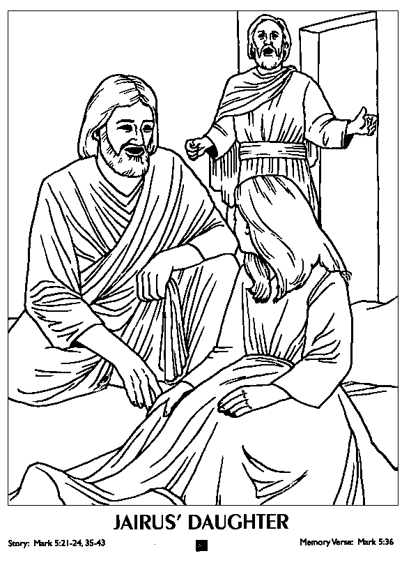

Read the lessons at the Vanderbilt Library website: http://divinity.lib.vanderbilt.edu/lectionary/BPentecost/bProper8.htm
Elementary School Pew-work
|
Listen for: __needy __light shines __fair balance __sleeping
|
Y S A K E S S U S E J
|
Write down 5 interesting words from the sermon (talk to an adult about the words after church). ________________ ________________ ________________ ________________ ________________
|
|---|---|---|
|
We remember the Holy Spirit during the season of Pentecost. We remembered the Holy Spirit in different symbols like water, fire, a dove, a comforter, oil, and a seal (a mark not the animal). Draw your own version of a Holy Spirit symbol.
|
||
